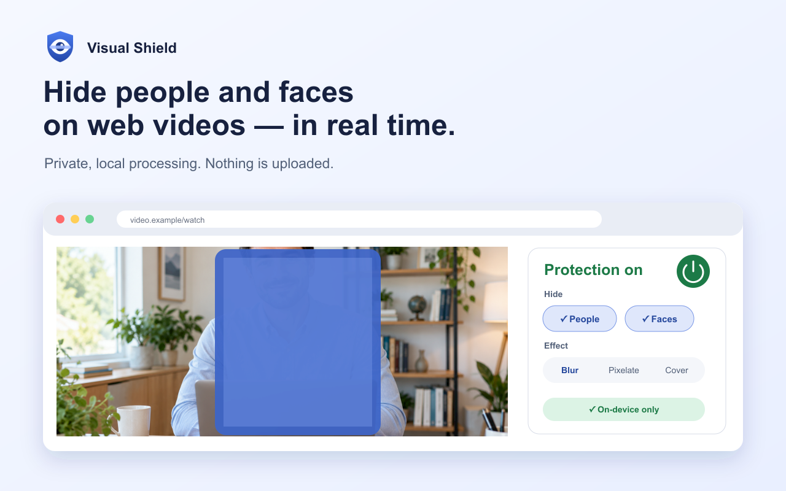

◉
People and face detection
Filter people, faces, or both in supported web videos and images.
Visual Shield detects and conceals people or faces in web videos and images. Processing happens locally in your browser, so your pixels stay on your device.

Choose what to conceal, select the effect you prefer, and tune performance for your device.
Filter people, faces, or both in supported web videos and images.
Choose blur, pixelate, or a solid cover and adjust the strength.
Keep global defaults or remember different protection settings for individual sites.
Cover content while it is being analysed or whenever a video cannot be inspected.
Use Battery Saver, Balanced, or High Accuracy according to your device.
Detection models run inside the extension. Visual Shield has no account, advertising, or analytics.
The public store link will be added here after review. Until then, this website is the official homepage and support hub for Visual Shield.
Read the privacy policy